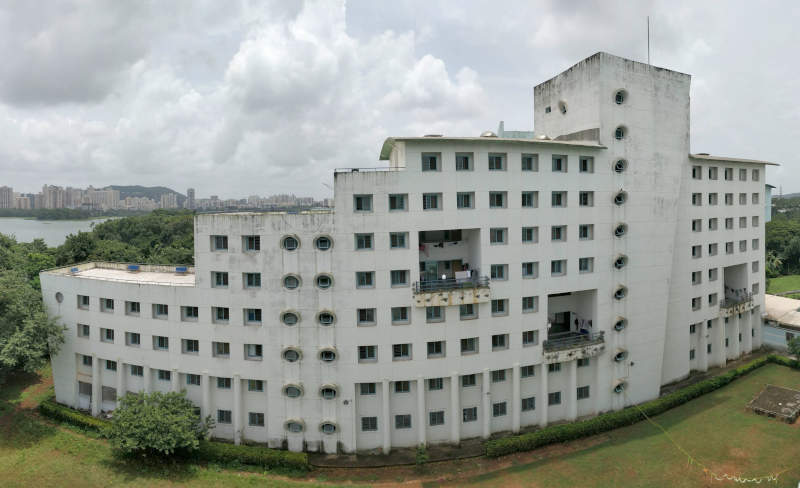
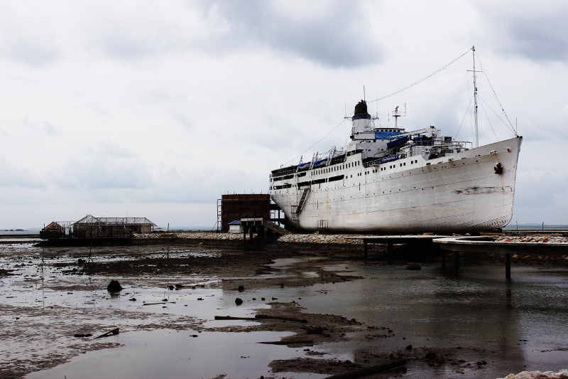
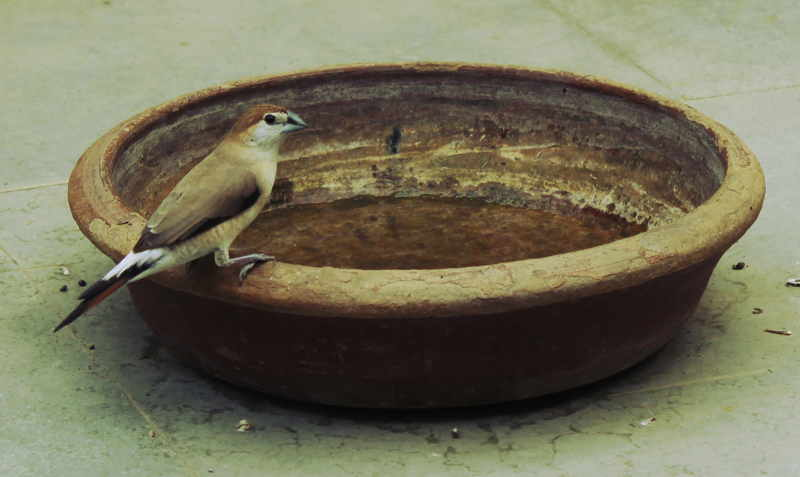
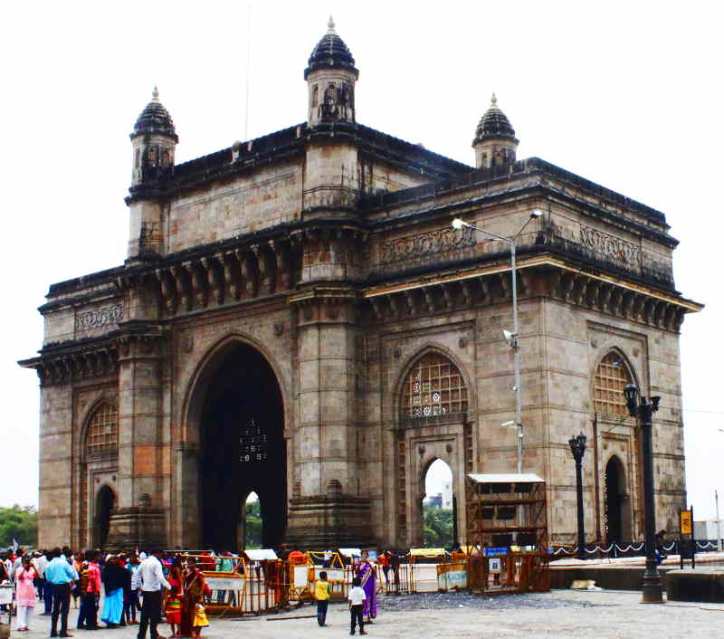

Hostel-14, IIT Bombay. [24-08-2019 @12:46:00]Bintan Island, Indonesia: My first solo trip to a random country. [29-01-2017 @17:30:21]Global warming effect: Waited for 2 hours to descry a sparrow on my rooftop garden. [26-09-2016 @16:04:44]Desultory shot while exploring Juhu beach after graduation. Still the puerile fascination with aeroplanes. [14-08-2016 @16:53:14]Bright and sunny day at Gateway of India [14-08-2016 @11:22:12]Fire, ice and shadows at Rohtang Pass [01-04-2016 @ 06:42:12]
Author
Anurag Gupta is an M.S. graduate in Electrical and Computer Engineering from Cornell University. He also holds an M.Tech degree in Systems and Control Engineering and a B.Tech degree in Electrical Engineering from the Indian Institute of Technology, Bombay.